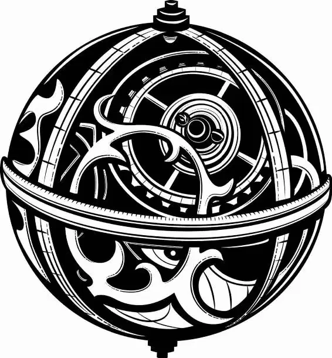

His brow furrowed in concern, Zanik peered up at his son. This was by far the scariest thing he had ever done. Stalling, he ran his hands along the blue paper airplane once more. His son had constructed it out of the blue paper hat, and it seemed sturdy enough—for a paper airplane.
Uneasy, Zanik stepped into the center of the airplane, testing its balance. Hatter cheerfully picked up the airplane, causing his father to topple over within it, and carried it to the window.
Hatter pulled his arm back and then launched the paper airplane through the grated window before his father could protest.
“Aaaahhhhhhh!” Zanik screamed as the airplane zoomed through the air.
Only, now that he was f lying, it wasn’t quite as scary anymore. Zanik shifted in his seat, redirecting the plane. It whirled in a loop, tipping Zanik upside down for a moment.
Zanik screamed once more, this time in excitement.
The plane coasted down and landed in a patch of grass. Zanik stood up and stepped out lightly, patting the blue paper affectionately, his mouth stretched in a grin.
Suddenly, a white beast loomed above him.Zanik gulped, then straightened and addressed the animal his son had assured him was on their side. “Good day to you,” he said. “My name is Zanik Hightopp. I wondered if you might give me a hand releasing my family from their prison. It is rather an urgent matter.”
The Bandersnatch nodded. Relieved, Zanik scrambled up the beast’s nose and hauled himself up onto his massive head. He settled right behind an ear, grabbing on to tufts of fur.
With a ferocious growl, the Bandersnatch reared up and turned toward the castle. As Zanik held on tight, the beast galloped into it and past all the grasping vines to the topmost tower.
Once they heard the Bandersnatch thumping up the stairs, Alice and Hatter rushed to the door. In one move, the Bandersnatch yanked it away. He panted proudly as Alice rubbed his cheek and Hatter lifted Zanik off his back, then set him down next to the other Hightopps.
“Now to grow you back,” Hatter said. He spotted the dome-covered plate on the table and removed the cover to reveal the Upelkuchen cake. “Aha.”
In next to no time, the Hightopps were back to their regular heights, laughing and hugging one another.
Hatter set his shoulders as his father approached him.
“I see you haven’t changed a bit,” Zanik said, glancing at Hatter’s zany attire.
“Nope.” Hatter smiled, a nervous but determined gleam in his eye.
Zanik studied his son. “Good,” he f inally said.
Tears stinging his eyes, Hatter reached forward to hug his father. Just then, a shudder ran through the room, and Hatter’s arms moved as though they were immersed in water. Alice spun—or she tried to. She, too, felt her body slow down as though it were trapped in honey.
Hatter’s arms f inally closed around his father with a thud as time returned to its regular speed. Confused, Hatter and Zanik stepped back and looked around.
“What the dickens was that?” Zanik asked.
Patches of rust had sprouted along cracks in the walls and f loor. Alice touched one of the spots, her f inger coming away covered in metallic red dust. It was rust. What if the Grand Clock was affected, too? Perhaps without the Chronosphere, it was losing power .... All signs seemed to point to the possibility that Time was grinding to a halt.
“Time! He’s slowing down!” Alice exclaimed. “He’s going to stop! I saw it. It’s why he wanted the Chronosphere.”
“Hang on,” Hatter said. “If Time ends, we all end. He told me so himself.”
Guilt swamped Alice. Hatter set his hands on her shoulders, forcing her to meet his eyes. Alice felt his conf idence in her f illing her with strength.
“We’ve got to stop the big head!” Hatter said f iercely.
“And get back the Chronosphere,” Alice added.
After surveying the discarded pieces of Time’s vehicle lying on the f loor, Alice turned to Hatter’s family. “Hightopps!” she called. “Gather the pieces of his time machine. We may have need of it yet.”
